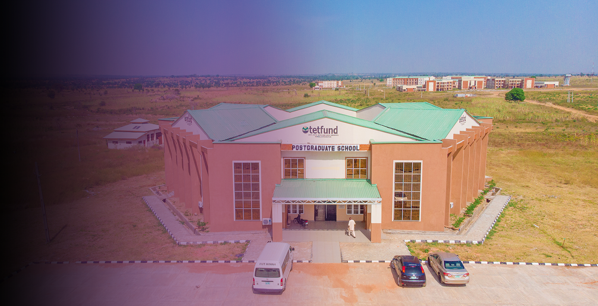
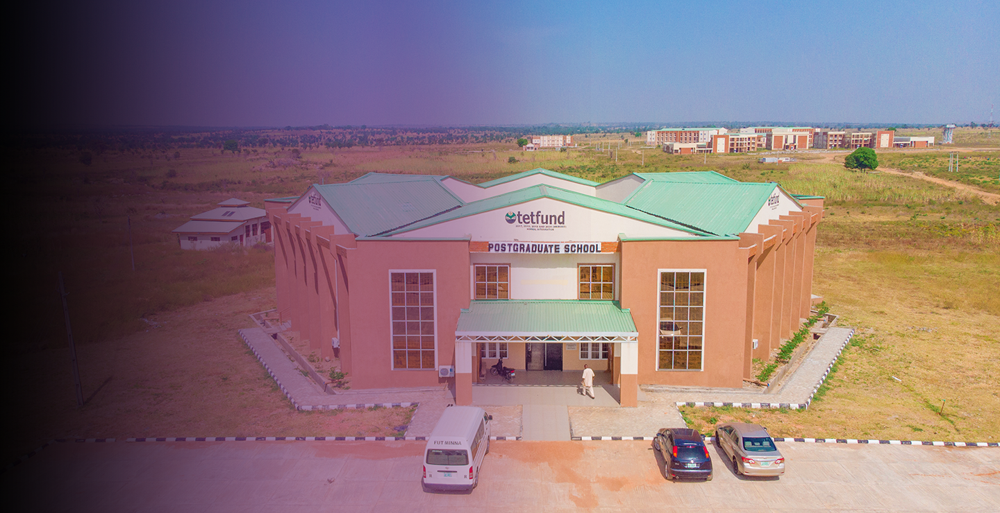

.jpg)


 

.jpg)
.jpg)
.jpg)
.png)
.png)
Hod's Biography

Prof. Muriana Aremu
Engr. Prof. Muriana Raheed Aremu joined the service of FUT Minna on the 9th of November 2005 as a lecturer II. He rose through the ranks and attained the rank of a Professor on the 1st of Oct 2018. When the Department of Materials and Metallurgy was created on the 17th September, 2014, by 387th special Senate of FUT, Professor R.A. Muriana was selected from Mechanical Engineering Department as one of the pioneering staff of the Materials and Metallurgical Engineering Department. His first appointment as HOD of the department was from February 2020 to March 2021, while the current (Second) term started from 2nd of March, 2021. He is the second HOD since the inception of the department. git Professor R.A. Muriana teaches courses in Materials Science and Engineering Application at both undergraduate and post graduate levels. He has handled/supervised numerous M.Eng/M.Tech and PhD theses, just as a good number of researches under his supervision are ongoing. The Professor and his group won grants from TETFUND (National Research Funds, NRF) and Federal Ministry Mine and Steel Development, Abuja. Professor Muriana is not left out in the development of his immediate community, the university and the world at large. He has served a number of administrative duties which he carried out diligently. He served as undergraduate level adviser for years, Departmental Computer Maintenance officer, Examination officer for Mech. Eng. Dept. as well as for Materials and Metallurgy Department. Professor Muriana is happily married with children
Philosophy
The philosophy of this programme is to attain the ultimate height in the training of high level ICT compliant material engineers. Such manpower should imbibe self-confidence, technical innovation based on sound scientific and technological knowledge to meet the daunting challenges of materials processing and application for the benefit of Nigerians and the World at large.
Our Mission
Providing high quality learning programme, training and research activities. Graduating students with required skills of national relevance to compete at international level. Attracting and developing high calibre faculty members for advancing cutting-edge research in materials engineering.
Our Vision
Our vision is to be an internationally recognized Centre of excellence for training, research and development in the field of Materials and Metallurgical Engineering.
Latest Announcements
- 2025 MME Symposium scheduled for March.
- New laboratory equipment commissioned.
- Student Industrial Training begins June.